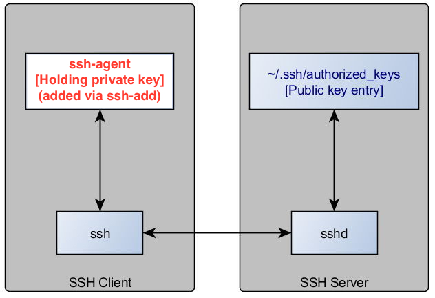
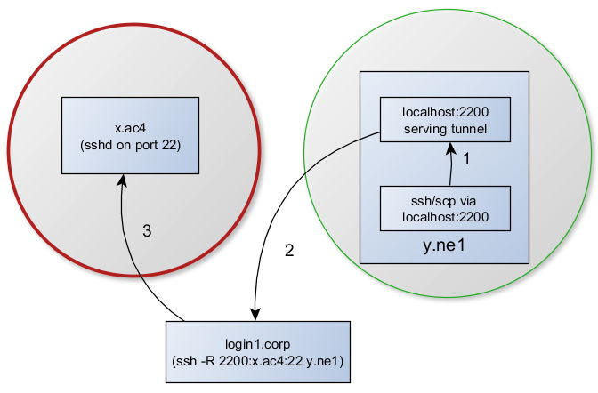

SSH Essential
Matthew Wang (@ymattw)
Mar 21, 2012
Outline
- Overview
- Basic usage
- Public key authentication
- SSH agent
- Troubleshooting
- Advanced: port forwarding
- Appendix
Overview
Concept, typical usage, clients
Concept
- Secure SHell, replaces telnet and rsh
- A network protocol for secure data communication
- OpenSSH is the most popular implementation
- Client-server model over TCP (default port 22)
Typical usage
- Remote shell services or command execution
- Secure data communication over an insecure network

Clients
- OpenSSH: ssh, scp, sftp, ssh-keygen, ssh-agent, ssh-add
- PuTTY (putty, plink, pscp, psftp, puttygen, pagent)
www.chiark.greenend.org.uk/~sgtatham/putty/download.html
Basic usage
Basic commands, known hosts, client side configuration
Basic usage: ssh
- ssh user@example.org
- ssh -l user example.org
- ssh example.org
- ssh example.org cat /etc/hosts
- ssh example.org "hostname; cat /etc/hosts"
- ssh -t example.org screen -dr
Basic usage: scp
- scp localFile user@example.org:remotePath
- scp user@example.org:remoteFile localPath
- scp -r localFile example.org:
- scp -o port=2222 example.org:remoteFile .
Basic usage: sftp
localhost:~ $ sftp login.example.org
Connecting to login.example.org...
Password:
sftp> ls
HOMEBACKUP HOSTS foo.example.org
error2.log success.log tf-tunnel.sh
sftp> get error2.log
Fetching /home/mattw/error2.log to error2.log
/home/mattw/error2.log 100% 1902KB 100.1KB/s 00:19
sftp> mput H*
Uploading HOSTS to /home/mattw/HOSTS
HOSTS 100% 31 0.0KB/s 00:00
sftp> help
...
sftp> exit
localhost:~ $
Known hosts
The prompt at first time connection
$ ssh -l mattw example.org
The authenticity of host 'example.org (192.168.0.2)' can't be established.
RSA key fingerprint is 77:a5:69:81:9b:eb:40:76:7b:13:04:a9:6c:f4:9c:5d.
Are you sure you want to continue connecting (yes/no)?
Warning: Permanently added 'example.org,192.168.0.2' (RSA) to the list of
known hosts
Skip the prompt: ssh -o BatchMode=yes
Known hosts
The warning
@@@@@@@@@@@@@@@@@@@@@@@@@@@@@@@@@@@@@@@@@@@@@@@@@@@@@@@@@@@
@ WARNING: REMOTE HOST IDENTIFICATION HAS CHANGED! @
@@@@@@@@@@@@@@@@@@@@@@@@@@@@@@@@@@@@@@@@@@@@@@@@@@@@@@@@@@@
IT IS POSSIBLE THAT SOMEONE IS DOING SOMETHING NASTY!
Someone could be eavesdropping on you right now (man-in-the-middle attack)!
It is also possible that the RSA host key has just been changed.
The fingerprint for the RSA key sent by the remote host is
77:a5:69:81:9b:eb:40:76:7b:13:04:a9:6c:f4:9c:5d.
Please contact your system administrator.
Add correct host key in /home/mattw/.ssh/known_hosts to get rid of this
message.
Offending key in /home/mattw/.ssh/known_hosts:36
Sometimes:
Offending key in /etc/ssh/known_hosts:36
Igore the warning: ssh -o StrictHostKeyChecking=no
Client side configuration
Save command line options to ~/.ssh/config
Host e
Hostname example.org
User mattw
Host foo.*
StrictHostKeyChecking no
man ssh_config
Public key authentication
Concept, generate key pair, setup key
Concept of public key authentication
- key for , and
- private key for decryption
- Messages are encrypted with the recipient's public key, and
- can be decrypted only with the corresponding private key

Generate key pair
- ssh-keygen [-t <rsa|dsa>] [-f identity]
- Default filename: ~/.ssh/id_rsa, ~/.ssh/id_dsa
- The passphrase
- Tip: dump public key
ssh-keygen -y -f identity
Setup key
- Append public key to ~/.ssh/authorized_keys on remote host
- The ownership and permission bits (minimal)
(Both sides) drwxr-xr-x 39 mattw users 4096 Mar 6 23:17 /home/mattw/ drwx------ 2 mattw users 4096 Mar 2 15:32 /home/mattw/.ssh/ (Client side) -rw------- 1 mattw users 951 Jul 29 2011 /home/mattw/.ssh/mattw.key (Server side) -rw------- 1 mattw users 951 Jul 29 2011 /home/mattw/.ssh/authorized_keys
- Use key in client side:
ssh -i ~/.ssh/mattw.key - In ~/.ssh/config:
Host github.com User git IdentityFile ~/.ssh/mattw.key
Use OpenSSH private key with PuTTY
SSH agent
Concept, using ssh-agent, agent forwarding
Concept of ssh agent
Using ssh-agent
ssh-agent daemonize itself and output a bunch of environment variables
- Invoke a ssh-agent process
- ssh-agent bash, or
- eval `ssh-agent`, or
- ssh-agent > .agent.rc; source .agent.rc
- Add key: ssh-add ~/.ssh/mattw.key
- List key: ssh-add -l
- ssh login.example.org
The secret
localhost:~ $ echo $SSH_AGENT_PID
19177
localhost:~ $ echo $SSH_AUTH_SOCK
/tmp/ssh-QQtcq19176/agent.19176
localhost:~ $ ls -l $SSH_AUTH_SOCK
srw------- 1 mattw users 0 Mar 19 13:46 /tmp/ssh-QQtcq19176/agent.19176
localhost:~ $
Agent forwarding
ssh -A
(ssh -o ForwardAgent=yes)

SSH agent in PuTTY

Run pagent.exe and add your private key (imported openssh key)
Troubleshooting
Tips, FAQ, where to get help
Troubleshooting tips
- Login problem
- ssh -v -v
- check ownership and permission bits
- /var/log/secure, /var/log/message
- SSH agent problem
- "Error reading response length from authentication socket"
- check
$SSH_AUTH_SOCK - ssh-add -l
My favorite FAQ
ssh remote "myscipt.sh &" just hang
- POC: ssh foo.example.org "/bin/sleep 5 &"
- It does not "hang", it is waiting for stdin/stdout/stderr as they are bound to the connection socket
Solution: redirect stdin/stdout/stderr, e.g: < /dev/null > run.log 2> &1
Similar: ssh remote myscipt.sh "hang" upon completion when it run other process in background with stdin/stdout/stderr open
OpenSSH FAQ 3.10 - Hangs when exiting sshWhere to get help
- man ssh, man ssh-keygen, man ssh_config, etc.
- Search the web
- "SSH, The Secure Shell: The Definitive Guide"
Advanced: port forwarding
Local/remote/dynamic port forwarding (tunneling)
Local port forwarding

Remote port forwarding
Dynamic port forwarding

Port forward only
ssh -f -N
-f Requests ssh to go to background just before command execution.
This is useful if ssh is going to ask for passwords or
passphrases, but the user wants it in the background.
-N Do not execute a remote command. This is useful for just for-
warding ports (protocol version 2 only).
Appendix
Other implementations
Other SSH implementations
- Dropbear: Lightweight SSH server/client for embedded systems
- paramiko: SSH2 implementation written entirely in python
- jaramiko: Java port of paramiko
- JSch - Java Secure Channel: a pure Java implementation of SSH2
- SecureCRT: Mluti tabbed SSH client, support Z-modem file transfer
- Poderosa: tabbed terminal emulator (SSH client) for Windows
- WinSCP: Graphical SCP client for Windows